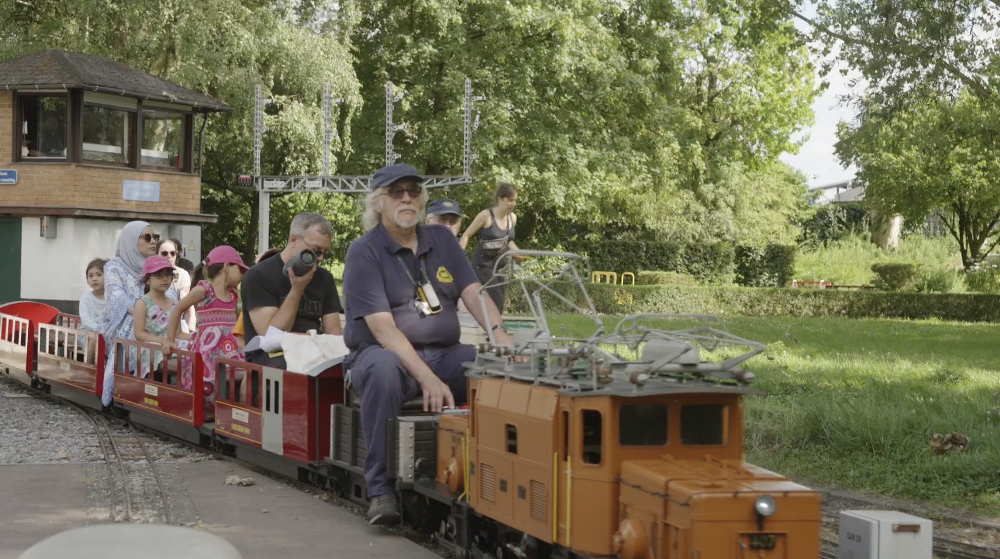
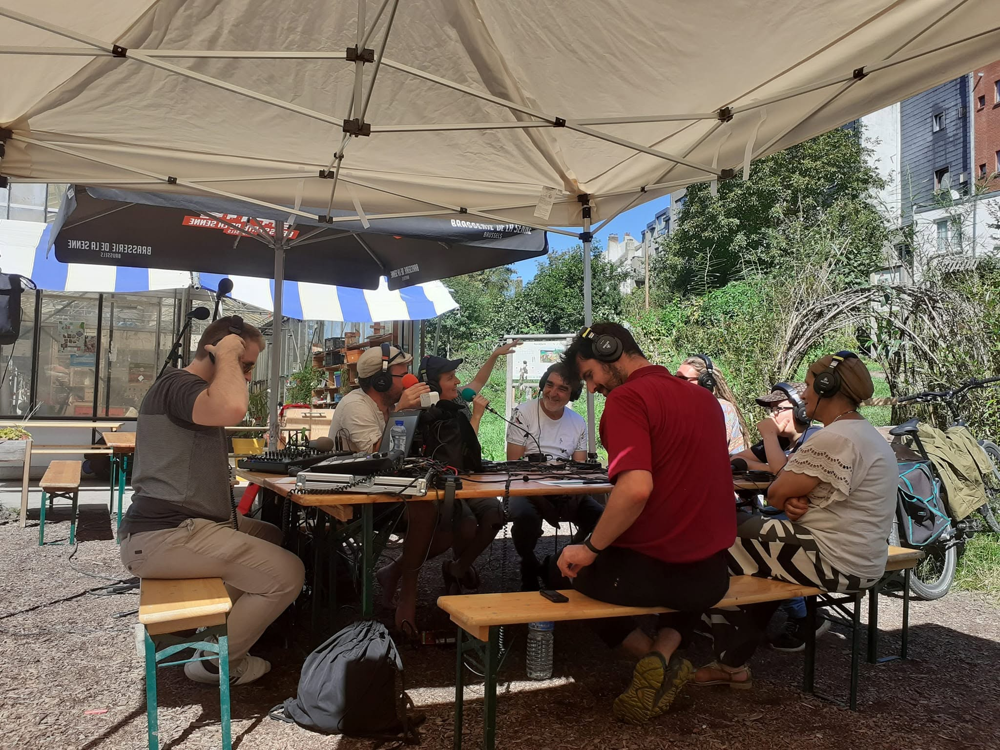
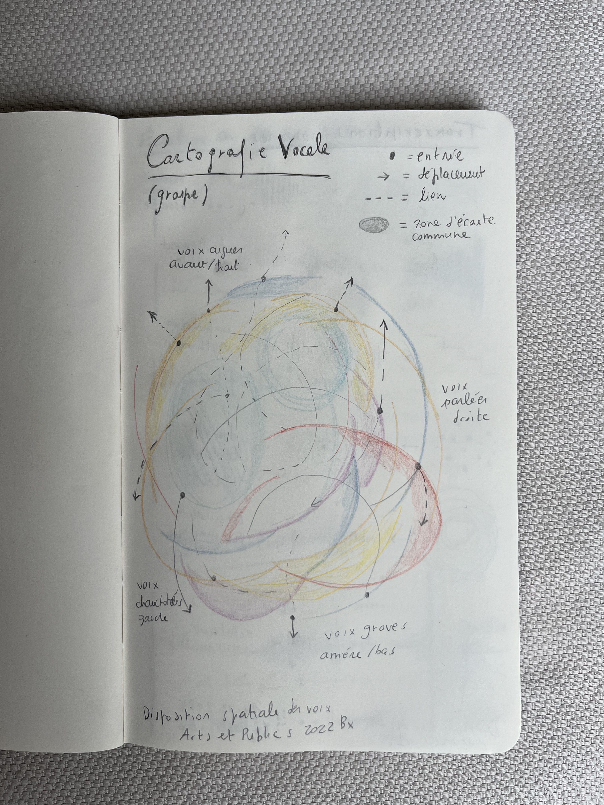
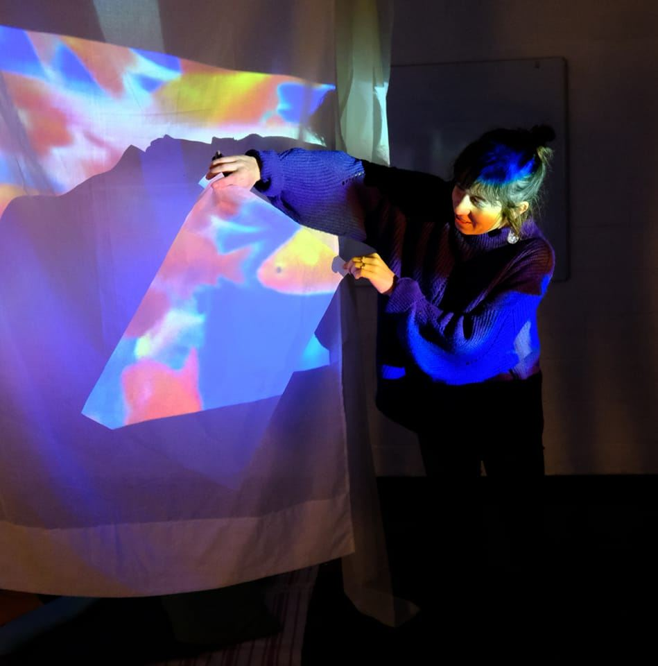

Sound
Voix de Bempt
Sound / radio / installation

Radio Marie Christine
Sound / radio / workshops

Voix et Corps
Voice / movement / sound / collective research

Reverberations joyeuses
Listening / light / sound installation / collective creation
